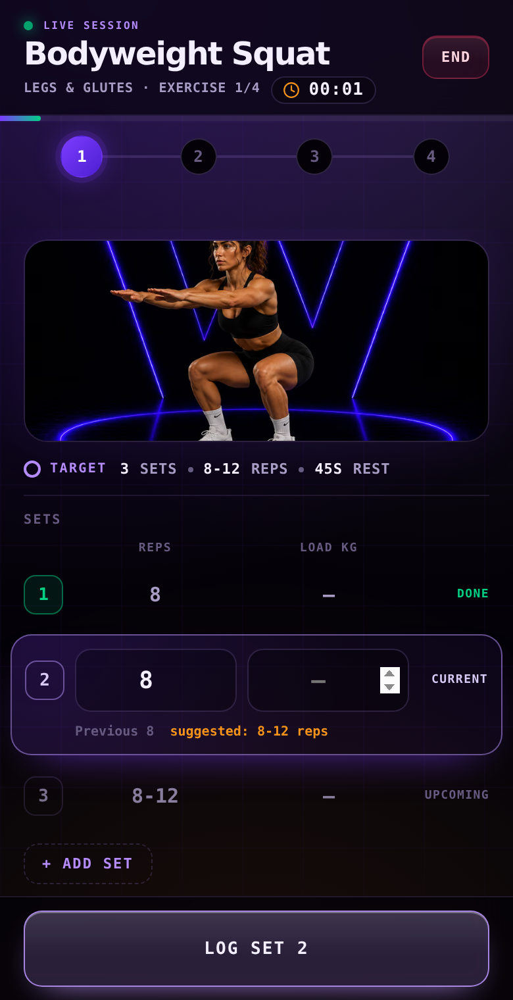

Local by default
Start training without creating an account.
Workstr is a free, local-first workout tracker with programs, live session tools, recovery guidance and optional private sync.
No account required Works offline Open source
Log a set, follow your progress and keep moving. Workstr keeps the active exercise, timer and next action within reach.

Start with a curated program, discover one through Nostr or build your own.
Run normal sets, supersets and EMOM blocks from one focused session screen.
Use history, statistics and recovery estimates to decide what comes next.
Workstr keeps the core training experience on your device. An account is optional, your records are portable, and sync extends the app without becoming a requirement.
Start training without creating an account.
Export and restore your complete Workstr data.
Use encrypted Nostr sync when you want the same records on another device.
Free Installable Open source
Open Workstr